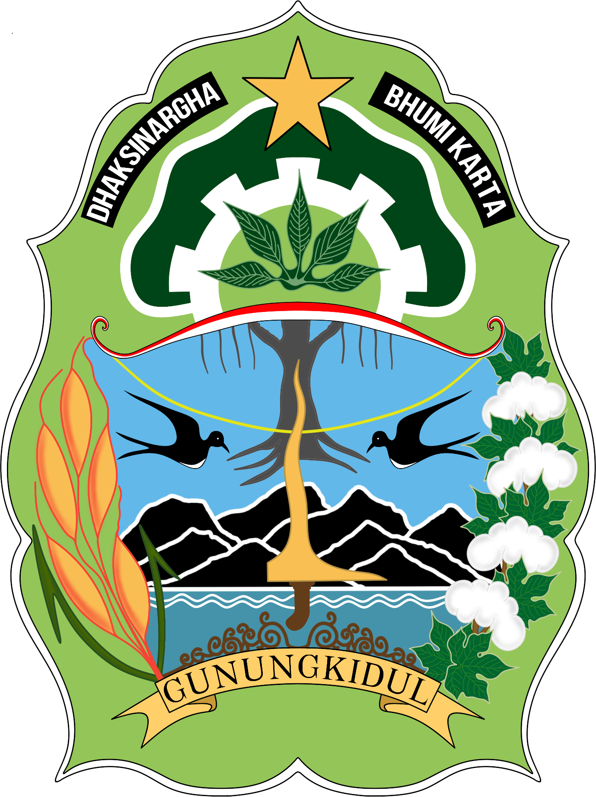

GUNUNGKIDUL
Profil Ekonomi & Investasi
Kabupaten Gunungkidul
Tinjauan Indikator Pembangunan Ekonomi, Sosial & Realisasi Investasi
Sumber: BPS Kabupaten Gunungkidul · Kabupaten Gunungkidul Dalam Angka 2022-2026
Realisasi
Investasi
Data OSS & LKPM — Realisasi investasi Kabupaten Gunungkidul 2021–2025
| Tahun | Data OSS (Rp) | Data LKPM (Rp) | Total (Rp) |
|---|---|---|---|
| 2021 | 155.059.507.342 | 127.775.390.787 | 282.834.898.129 |
| 2022 | 261.166.467.868 | 214.184.207.082 | 475.350.674.950 |
| 2023 | 421.653.307.591 | 207.514.690.446 | 629.167.998.037 |
| 2024 | 714.545.385.112 | 111.108.200.610 | 825.653.585.722 |
| 2025 | 680.335.327.108 | 171.411.437.620 | 851.746.764.728 |
Tantangan Realisasi
LKPM Gunungkidul
Identifikasi permasalahan pelaporan LKPM di sistem OSS RBA oleh DPMPTSP Kab. Gunungkidul
Kendala Literasi Digital: Pelaku usaha di zona selatan dan pelosok masih banyak yang belum mahir mengoperasikan pelaporan LKPM berbasis daring secara mandiri.
Upaya Peningkatan
Realisasi LKPM
Langkah-langkah strategis yang telah dilaksanakan DPMPTSP Kab. Gunungkidul untuk meningkatkan kepatuhan LKPM
Tingkat
Kemiskinan
Persentase & jumlah penduduk miskin Kabupaten Gunungkidul, 2021–2025
Sumber: BPS Kab. Gunungkidul, Gunungkidul Dalam Angka 2022-2026
Pertumbuhan
Ekonomi
Laju pertumbuhan ekonomi Kabupaten Gunungkidul 2021–2025
Sumber: BPS Kab. Gunungkidul, Gunungkidul Dalam Angka 2022 & 2026
Rasio Gini
(Ketimpangan)
Indeks ketimpangan distribusi pendapatan masyarakat Gunungkidul
*Perbandingan berdasarkan data BPS DIY 2022–2023
Sektor Penyumbang
PDRB Terbesar
Lapangan usaha penyumbang PDRB terbesar Kabupaten Gunungkidul (miliar rupiah)
Tingkat
Pengangguran
Tingkat Pengangguran Terbuka (TPT) Kabupaten Gunungkidul, 2021–2025
Sumber: BPS Kab. Gunungkidul, Gunungkidul dalam angka 2022-2026
Tingkat Partisipasi
Angkatan Kerja
TPAK — persentase penduduk usia kerja yang aktif di pasar tenaga kerja
Sumber: BPS Kab. Gunungkidul, Gunungkidul dalam angka 2022-2026
Lulusan SMA &
SMK Gunungkidul
Data lulusan SMA dan SMK Kabupaten Gunungkidul berdasarkan jurusan, jenis kelamin, dan tahun 2021–2025
Sumber: Balai Diklat Menengah

GUNUNGKIDUL
Gunungkidul
Terus Bertumbuh
(↓ dari 17,69%)
Ekonomi 2025
2025
Terbuka 2025
2025
2025
| Indikator | Gunungkidul | DIY | Nasional |
|---|---|---|---|
| Kemiskinan (2025) | 14,15% | 10,83% | 9,03% |
| Pertumbuhan Ekonomi (2025) | 17,41% | 5,12% | 5,03% |
| Pengangguran / TPT (2025) | 2,15% | 3,84% | 4,82% |
| Rasio Gini (2025) | 0,333 | 0,430 | 0,379 |
Sumber: BPS Kabupaten Gunungkidul · Gunungkidul Dalam Angka 2022-2026
Disusun oleh: DPMPTSP Kabupaten Gunungkidul · 2025 · *Data DIY & Nasional sebagian bersifat estimasi/perbandingan